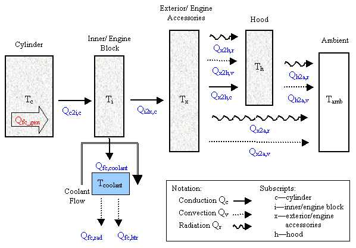

Updates to Fuel Converter Cold-to-Hot Correction Factors, January 2001
Fuel Converter block diagram
Fuel Use and EO emissions block diagram
Role of subsystem in vehicle
The fuel converter model simulates a power source for the vehicle. In the case of an internal combustion engine, it is the device that converts the fuel into useable energy (mechanical shaft work) for the drivetrian. It can be incorporated into various vehicle configurations including, series, parallel, and conventional vehicles.
Description of modeling approach
Given a requested speed and torque calculated by the other submodels, the fuel converter model determines the engine operating point required to meet these requirements while also accounting for inertial losses and accessory loads. The engine controller module does not allow the fuel converter to operate outside of its normal operating speed and torque ranges. The controller also determines the engine speed if the clutch is disengaged. Once the achievable speed and torque have been determine these values are passed back to the rest of the vehicle model. These values are also used to determine the fuel use and emissions for each time step. The fuel use and fuel converter out emissions values are stored in tables indexed by fuel converter speed and torque. Temperature correction factors have been incorporated to scale the fuel use and emissions for cold starts.
Variables used in subsystem
See Appendix A.2: Input Variables
See Appendix A.3: Output Variables
Implementation: Thermal Model
The thermal model of the engine breaks the engine assembly into four temperatures: the cylinder, the engine block, the exterior engine accessories, and the hood of the vehicle. The coolant operates as a thermostat, with the setpoint set by the user. Heat is generated by combustion, conducted to the engine block, and removed through forced liquid cooling, conduction, natural convection, and radiation (see Figure 1).

Figure 1: Schematic of engine thermal model
The calculations for the individual heat transfer paths are detailed below, and the temperatures of the four nodes are then given. See Figure 1 for subscript notation (example: Qc2i,c = heat transferred from the cylinder to the inner block via conduction)..
CYLINDER
Qfc_gen
The heat generated by the engine is found from the fuel used, the usable power, and the heat contained in the exhaust.
Qc2i,c
Heat is removed from the cylinder to the engine block through conduction. This conductance (W/K) is specified by the user in the engine input file; a representative value is 500 W/K. Qc2i,c=fc_c2i_th_cond*(Tc-Ti)
INNER/ENGINE BLOCK
Qi2x,c
Some of the input heat (Qc2i,c) is removed from the engine block to the exterior/engine accessories through conduction. Again, this conductance (e.g. 500 W/K) is specified by the user in the engine input file. Qi2x,c=fc_i2x_th_cond*(Ti-Tx)
Qfc,coolant
The remaining heat input into the engine block (Qc2i,c-Qi2x,c) is assumed to be absorbed into the coolant if the coolant flow is on. The coolant operates on a thermostat setpoint, turning on when the block temperature exceeds the setpoint of fc_tstat.
Qfc,htr
If the key is on, some of the coolant heat is used for the cabin heater. This amount is based on a user specified heat exchanger effectiveness from the coolant to the heater (e.g. fc_cl2h_eff=0.7), and a given heater air flow (e.g. fc_h_air_flow=1kg/s). Qfc,htr=fc_cl2h_eff*fc_h_air_flow*cp,air*(Tcoolant-Tamb)
Qfc,rad
If the key is on, the remaining heat input into the coolant is released through the radiator. Qfc,rad=Qfc,coolant-Qfc,htr
EXTERIOR/ENGINE ACCESSORIES
The surface area used below was scaled by the power scale of the engine: Scale=fc_pwr_scale0.67 (based on a spherical surface area of an engine).
Qx2h,r
Radiative heat from the exterior to the hood is given by: Qx2h,r=es*A*(Tx4-Th4)=fc_emisv*5.67E-8*fc_ext_sarea*(Tx4-Th4).Here the temperatures are in Kelvin.
Qx2h,v
For an explanation of the chosen heat transfer coefficient, see Qair under the motor thermal model description. The heat removed from the exterior to the hood through natural and forced convection is given by Qx2h,v=hair*A*(Tx-Th)=hair*fc_ext_sarea*(Tx-Th)
Qx2h,c
Some of the input heat (Qi2x,c) is removed from the engine accessories to the hood through conduction. This conductance (e.g. 10 W/K) is specified by the user in the engine input file. Qx2h,c=fc_h2x_th_cond*(Tx-Th)
Qx2a,r
Heat was also radiated from the exterior directly to ambient air. This surface area was assumed to be 50% of the exterior surface area. Qx2a,r=es*A*(Tx4-Tamb4)=fc_emisv*5.67E-8*(.5*fc_ext_sarea)*(Tx4-Tamb4)
Qx2a,v
Again, the surface area available for convection to ambient was assumed to be 50% of the exterior surface area. For an explanation of the chosen heat transfer coefficient, see Qair under the motor thermal model description. The heat removed from the exterior to the ambient air through natural and forced convection is given by Qx2a,v=hair*A*(Tx-Tamb)=hair*(.5*fc_ext_sarea)*(Tx-Tamb)
HOOD
Qh2a,r
Radiative heat from the hood to the ambient surroundings is given by: Qh2a,r=es*A*(Th4-Tamb4)=fc_hood_emisv*5.67E-8*fc_hood_sarea*(Th4-Tamb4).
Qh2a,v
For an explanation of the chosen heat transfer coefficient, see Qair under the motor thermal model description. The heat removed from the hood to the ambient air through natural and forced convection is given by Qh2a,v=hair*A*(Th-Tamb)=hair*fc_hood_sarea*(Th-Tamb)
TEMPERATURE EQUATIONS
Tc
The base mass (cylinder and engine block) was assumed to have a 1.8 kg/kW value (and can also be explicitely defined in the FC file). Of this mass, 20% was assumed to be associated with the cylinders.
Ti
The mass of the engine block was assumed to be 80% of the base mass.
Tx
The accessory mass may be explicity defined in the FC file. As a rule, a mass of 0.8 kg/kW was assumed (based on 1994 OTA report, Table 3).
Th
The mass of the hood was assumed to be 10% of the vehicle glider mass.
Equations used in subsystem
(torque available) = (engine torque available) – (accessories torque)
(accessories torque) = (accessories mechanical power) * (engine speed)
(engine torque available) = max((closed throttle torque), min((torque requested), (max torque)))(torque requested) = (torque requested by clutch) + (inertial torque) + (accessories torque)
(inertial torque) = (shaft rate of acceleration) * (engine inertia)
(accessories torque) = (accessories power) / (shaft speed)
(speed available) = min((speed requested), (max engine speed)) * (clutch state = engaged) + (spin-down speed) * (clutch state ~= engaged)
(spin-down speed) = max((idle speed),(closed throttle speed))
(closed throttle speed) = ((closed throttle torque) - (accessories torque)) / (engine inertia) * (time step)
(speed requested) = (speed requested by clutch)
(gallons of fuel used) = sum(fuel used per time step)
(fuel used per time step) = (engine out fuel used) * (engine temperature fuel use correction factor)
(engine temperature correction factor) = 1+ ((fc_tstat-(engine coolant temperature))/(75))^3.1
(engine coolant temperature) = Ti as calculated above (see Figure 1)
(engine-out emissions per time step) = (fully-hot engine out emissions as a function of speed and torque)*(engine temperature emissions correction factor)
(normalized temperature)=(fc_tstat-(engine coolant temperature))/(fc_tstat-20)
For HC: (engine temperature correction factor) = 1+7.4* (normalized temperature) ^ 3.072
For CO: (engine temperature correction factor) = 1 + 9.4 * (normalized temperature) ^ 3.21
For NOx: (engine temperature correction factor) = 1+ 0.6 * (normalized temperature) ^ 7.3
For PM: assumed to be the same as HC, (engine temperature correction factor) = 1+7.4* (normalized temperature) ^ 3.072
References
The temperature corrections for the emissions releases are based on a report entitled “Emission Simulations: GM Lumina, Ford Taurus, GM Impact, and Chrysler TEVan” by J. Dill Murrell and Associates, LLC., Saline, MI, January 1996.
Last Revised: 01/31/01: VHJ
{kind=link}
{kind=link}